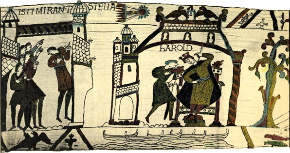
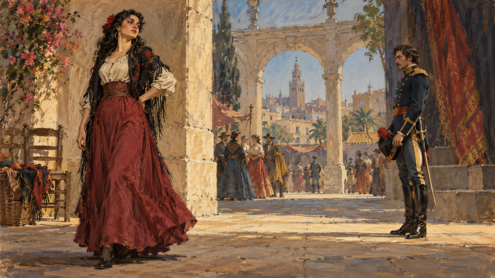

History / America
벤저민 프랭클린 — 인쇄공은 왜 함께 읽을 책을 모았을까
프랭클린의 인쇄업과 준토 모임, 구독 도서관과 덕목 기록을 통해 배움을 공동의 일로 만든 과정을 읽습니다.
이야기 읽기A NEW WALK
이번에 함께 읽을 이야기 10편입니다.
소주제별 서가 ↗History / America
프랭클린의 인쇄업과 준토 모임, 구독 도서관과 덕목 기록을 통해 배움을 공동의 일로 만든 과정을 읽습니다.
이야기 읽기
Cities / Asia
실제 청동상의 자세와 장신구에서 모헨조다로의 수공업과 물의 시설, 해독되지 않은 기록의 한계를 읽습니다.
이야기 읽기
Culture / Art
혜성을 가리키는 장면에서 바이외 자수의 연속 서사와 승자의 관점, 생활의 세부를 읽습니다.
이야기 읽기
Culture / Music
네 막의 줄거리와 하바네라·투우사의 노래·꽃노래를 함께 읽고 자유와 소유의 갈등을 살펴봅니다.
이야기 읽기
Culture / Literature
단테스의 투옥과 탈출, 세 사람을 향한 복수와 뜻밖의 피해를 따라 작품의 줄거리와 질문을 읽습니다.
이야기 읽기
Companies / Finance
영국 동인도회사가 무역과 군사력, 현지 권력과의 협상을 통해 통치의 주체가 된 과정을 읽습니다.
이야기 읽기
Computing / Internet
모스의 전신 실용화와 공공 자금, 전선과 부호를 통해 정보가 사람의 이동과 분리된 변화를 읽습니다.
이야기 읽기
Finance / Money
1716년 은행과 1717년 무역회사, 국가 부채와 주식 열풍이 결합한 과정과 1720년의 위기를 읽습니다.
이야기 읽기
Finance / Banking
은행 인출 사태 속의 일시 휴업과 검사, 라디오 설명과 예금보험 제도의 의미를 역사적으로 읽습니다.
이야기 읽기
Science / Chemistry
패러데이의 촛불 강연을 따라 심지와 연료, 기체와 산소, 물과 이산화탄소의 연결을 읽습니다.
이야기 읽기